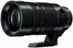

器材库 > APS画幅镜头 > DG 100-400/4-6.3 OIS

详细规格
镜头类型
超远摄变焦镜头
发布日期
2016-01-06
厂家推荐价格
1,799.99 （美元）
焦距
100mm-400mm
等效35mm画幅焦距
200mm-800mm
最大光圈
f/4-6.3
最小光圈
f/22
视角（对角）
12°-3.1°
镜头结构
20片/13组
非球面镜片
1片
低/超低色散镜片
3片
光圈叶片
9片
最近对焦距离
130cm
最大放大倍率
0.25
滤镜口径
72mm
镜头卡口
Micro 4/3
防抖
是
颜色
黑色
尺寸
83×171.5mm
重量
985g
附件
镜头盖，镜头后盖，镜头袋，外接支架，遮光罩
promise3232016-08-03 23:354.83 分
操作性 5.00耐用性 5.00性价比 4.00解像力 5.00色彩还原 5.00机械结构 5.00
promise3232016-07-31 11:02
promise3232016-07-20 15:46
产品图 / 样片
评测 / 相关文章
该产品暂无存档的评测文章
相关文章
- ［试用］M43小钢炮 聊聊DG VARIO-ELMAR 100-400 （原站已下线）
- ［资讯］松下100-400镜头即将开卖 （原站已下线）
- ［资讯］松下Leica DG 100-400mm f/4-6.3 （原站已下线）